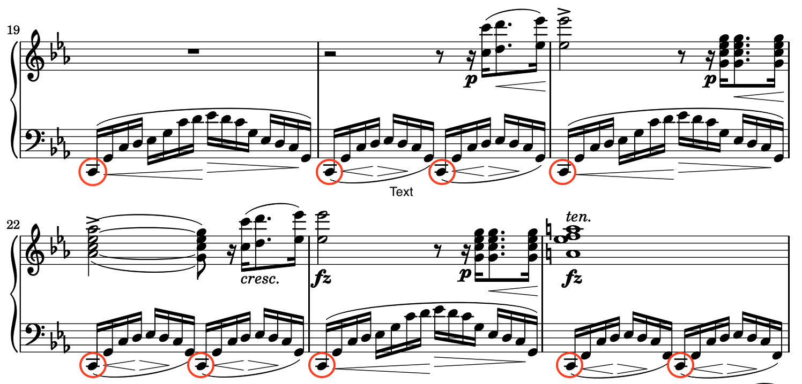
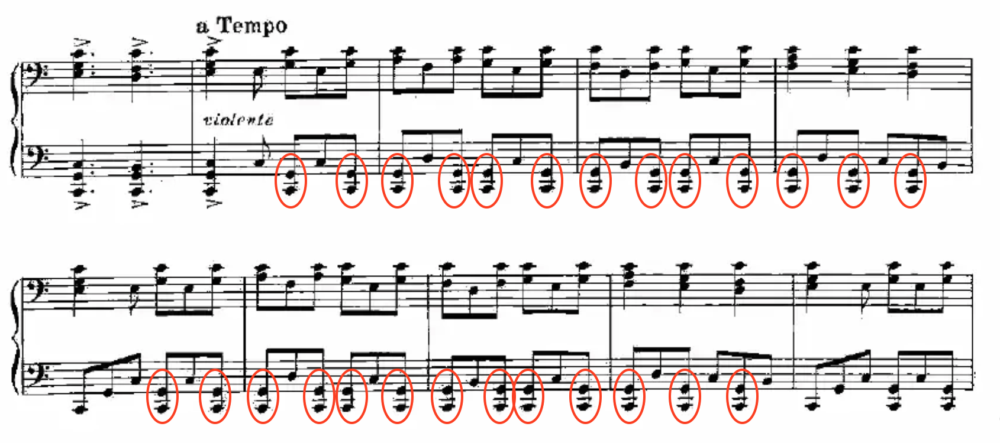
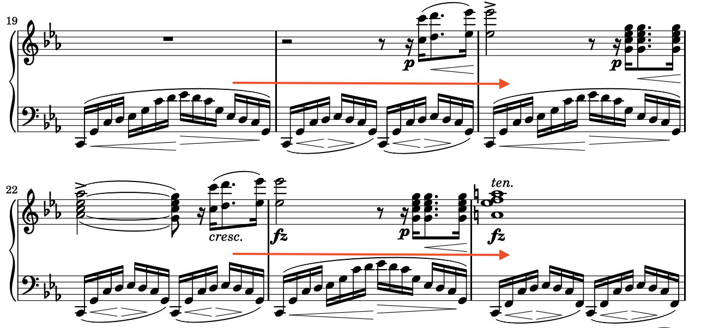
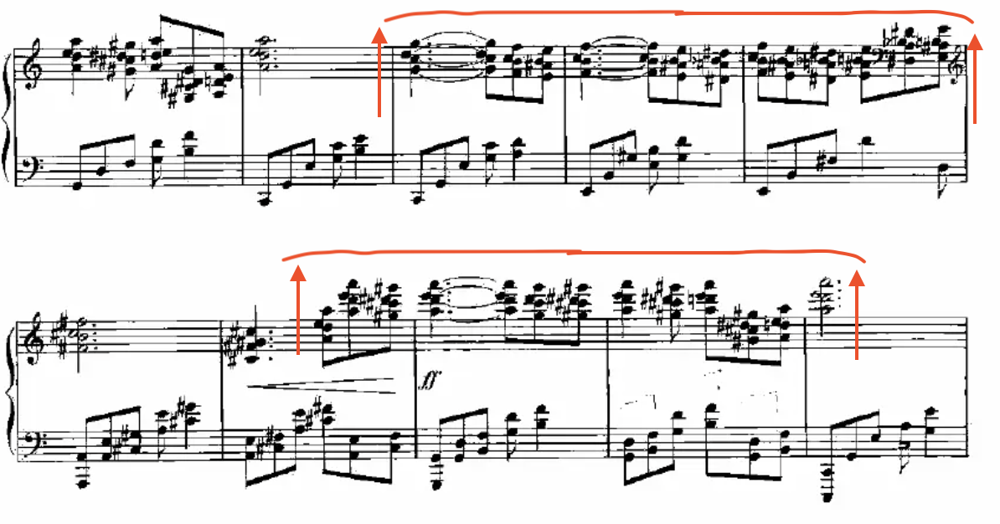
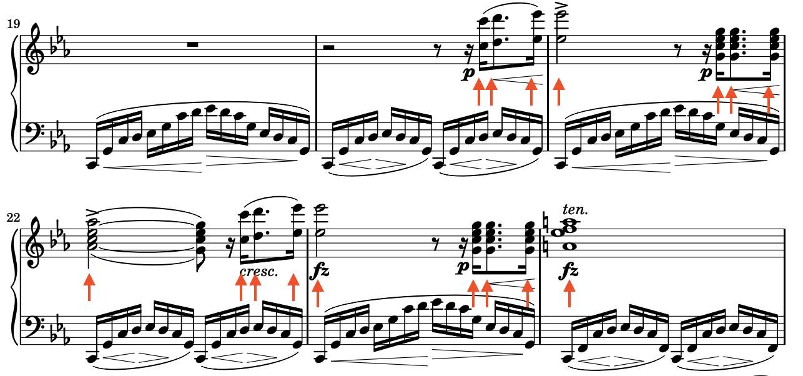
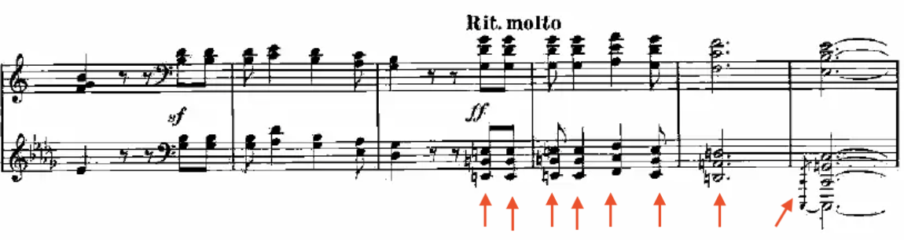
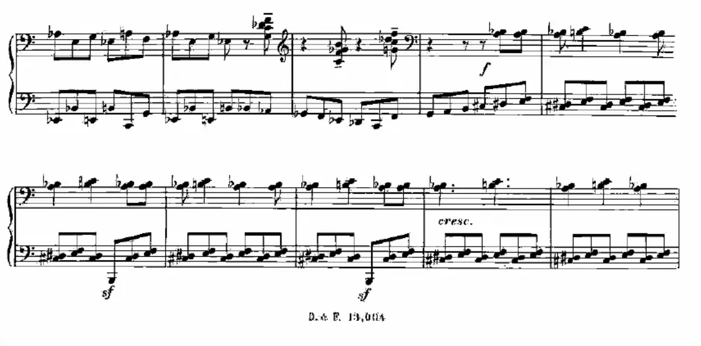
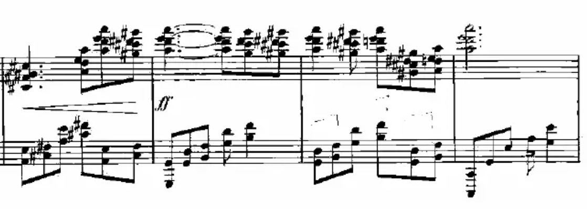
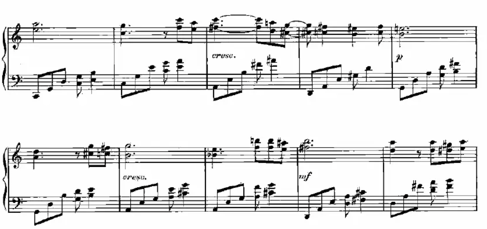

Nacionalismo argentino
En la primera mitad del siglo XX, Argentina pasó por cambios importantes que formaron su identidad y cultura. Este periodo fue definido por el ascenso del nacionalismo y autoritarsmo. Las dictaduras tuvieron una gran influencia en la promoción de una cultura nacionalista que valoraba los intereses del gobierno argentino al promover políticas aislacionistas y los intereses de los gobernantes. También vino acompañado de un fuerte sentido de patriotismo y deseo de una identidad nacional única, que no eran necesariamente malos. Empezó en 1930 con un golpe de estado que sacó del poder al presidente Hipólito Yrigoyen, marcando el inicio de un período de control político con un enfoque de nacionalismo y gobiernos militares (Navarro 165-166). Los nuevos líderes querían hacer más fuerte al país, pero usaron leyes estrictos y autoritarismos. Al mismo tiempo, Argentina tuvo un conflicto con Inglaterra por las Islas Malvinas, que no terminó hasta 1982. El enfoque en el nacionalismo influyó en cómo los ciudadanos pensaban sobre el papel de Argentina en el mundo.
En 1946, Juan Perón fue elegido al poder y promovería aún más cultura nacionalista a log largo de su carerra. Mientras Perón promovía los derechos de los trabajadores, salarios justos, y mejores condiciones laborales, fue muy autoritario en otros aspectos. Limitó las libertades de expresión, prensa, y reinión, y frecuentemente usó fuerza para encarcelar a opositores políticos. Estos esfuerzos contribuyeron a una identidad basada en los medios de comunicación controlados por el Estado y la ideología oficial (Navarro 196-198). Después de la Gran Depresión que colapsó el comercio mundial, Perón pensó que Argentina debía hacer su economía independiente del producción e importaciones extranjeras. Esto significaba que Argentina tenía que producir más de sus propios recursos (207-208). Las políticas laborales de Perón y su enfoque en la independencia económica fueron populares entre la gente, pero su autoritarismo llevó a su derrocamiento en 1955.
Durante las eras del gobierno de la junta militar y el gobierno peronista, había ideas diferentes del nacionalismo entre los ciudadanos y el ejército. El nacionalismo del gobierno quería aumentar su poder en el mundo y su poder sobre sus propios ciudadanos. Lo hicieron construyendo una economía aislacionista, luchando por el control de las Islas Malvinas, y limitando las libertades personales para promover los intererses del Estado. Sin embargo, el nacionalismo de los ciudadanos solo quería una nación fuerte y estable con un sentido de identidad, y muchos fueron dañados por las políticas extranjeras y domésticas de estos gobiernos . Aun así, había un deseo común de hacer a Argentina más fuerte y orgullosa. Los símbolos nacionales, como la bandera y el himno nacional, se hicieron populares porque los medios controlados por el Estado los promovieron activamente, y la gente mostró su orgullo en la literatura, el arte y la música (Gelman 176-177, 211-213). El tango, por ejemplo, se convirtió en una forma importante de expresar su cultura en el mundo Latinoamérica.
La música fue una manera especial de reflejar y fortalecer la identidad nacional. El compositor Alberto Ginastera tuvo un papel importante en mostrar el espíritu de Argentina en esta época. Su música para piano, como Las Danzas Argentinas, mezclaba temas folclóricos argentinos con estilos modernos.
Jorge Rafael Videla llegó al poder por otro golpe de Estado en 1976. Liderando hasta 1983, su dictadura de derecha fue la más brutal en la historia argentina. Al igual que Perón, fue conocido por encarcelar a opositores políticos y limitar la libertad de expresión y de prensa. Sin embargo, a diferencia de Perón, Videla también empeoró los derechos laborales y utilitzó su poder de censura para destruit y ocultar los aspectos de izquierda de la ideología peronista, incluyendo la indentidad ciudadana construida durante la primera mitad del siglo XX (Buch 485-487).
Vida y obras de Ginastera
Alberto Ginastera nació en Buenos Aires en 1916, y sería considerado uno de los compositores más importantes de la música argentina. Su música puede dividirse en tres períodos distintos. El primero, de 1934 a 1948, se conoce como Nacionalismo Objetivo, donde se centró en incorporar música folclórica tradicional argentina en un estilo clásico. El segundo período, de 1948 a 1958, se llama Nacionalismo Subjetivo, durante el cual la música de Ginastera se hizo más personal, reflejando sus propias emociones y experiencias, pero todavía tenía elementos de la cultura argentina. Su último período, de 1958 a 1983, se llama Neo-Expresionismo, donde su música se volvió aún más expresiva, utilizando técnicas más modernas y explorando ideas más emocionales y dramáticos (Hanley 11-13).
Con el tiempo, su música evolucionó para volverse más personal y expresiva, pero en todas sus obras, Ginastera mantuvo un profundo sentido de orgullo argentino. En 1971, fundó el Centro Latinoamericano de Estudios Musicales Avanzados, ayudando nuevas generaciones de músicos. Durante la dictadura militar de Videla, la música de Ginastera fue censurada por su fuerte relación con la identidad cultural de Argentina durante la primera mitad del siglo XX — la cultura que Videla quería evitar. Su ópera Bomarzo fue completamente prohibida por su representación de violencia social y política, y las representaciones de obras como Danzas Argentinas también fueron severamente restringidas. En parte para escapar de esta censura y del gobierno represivo, Ginastera fue a los Estados Unidos y más tarde a Suiza, donde vivió hasta su muerte en 1983 (Buch 486-488). Su música sigue siendo celebrada por su fuerte conexión con la cultura argentina y su enfoque innovador de la música clásica .
Una de sus primeras obras, Danzas Argentinas, fue compuesta en 1937 y cae en la categoría de Nacionalismo Objetivo. Es su obra más celebrada hoy por su papel en la identidad de Argentina y por su fundación de la música Latinoamérica para el piano. Como otras obras del período de Nacionalismo Objetivo, Danzas Argentinas incorpora elementos de la música folclórica argentina dentro de un marco clásico, combinando sonidos tradicionales con estructuras musicales más sofisticadas. La pieza tiene tres danzas, cada una nombrada en honor a una figura icónica de la cultura argentina. Es un claro ejemplo de cómo Ginastera usó la música para celebrar y expresar la identidad nacional.
Ver las Danzas en Youtube, interpretado por Juan Floristán
Iconos de las Danzas
Furlong, Charles Wellington. A Titan of the Patagonian Pampas. 1908. Smithsonian American Art Museum, Washington, DC.
DANZA DEL VIEJO BOYERO
Un boyero es un conductor de ganado y bueyes, responsable de cuidar el ganado en el campo. Este era un rol tradicional en la Argentina rural que Ginastera esperaba enfatizar. Más tarde en la era de Perón, los Boyeros tenían un papel esencial en la producción de la carne después de la Gran Depresión. La carne que producían fue un contribuyente importante en los pasos de Argentina hacia la independencia económica, y los boyeros son parte de la razón por la que Argentina todavía es conocida por la carne en el siglo XXI.
Los boyeros también representan la conservación de la tierra y las prácticas agrícolas y ambientales originales en una época en la que el paisaje global se estaba urbanizando a un ritmo exigente. El boyero fue la selección perfecta de Ginastera como símbolo nacionalista para abrir la primera danza por su asociación con la fortaleza económica de Argentina en su día y porque representa la hermosa cultura rural del pasado. La danza comienza de manera tranquila para representar el ambiente calmado del campo rural y va aumentando en grandeza hacia un sonido que abarca el emocionante e importante papel del boyero.
DANZA DE LA MOZA DONOSA
La Moza Donosa se supone que representa a una hermosa bailarina. Es especialmente representativa del tango, que se estaba convirtiendo en una parte cada vez más significativa de la cultura argentina. El tango se originó en los barrios de Buenos Aires en la década de 1880, pero vio su enorme crecimiento a principios del siglo XX. Ginastera, nacido y criado en Buenos Aires, creció junto al tango.
La música del tango estaba mayormente destinada a la guitarra. La guitarra era una parte demasiado esencial de la cultura del tango como para ser reemplazada por el piano. Aun así, Ginastera, como músico, quería rendir tributo a esta gran parte musical de la identidad en desarrollo de Argentina con su segunda danza. Así que, en lugar de hacer una pieza para el tango, utilizó su genio musical para crear una pieza sobre el tango. Ginastera captura de manera expresiva la elegancia de la guitarra del tango y los movimientos de la danza.
Pérez, Fabián. Dancer in Red. 2004. Fabian Perez, https://fabianperez.com/art/dancer-in-red-painting/.
Gaucho of the Argentine Republic. 1868. Library of Congress, LOT 4832, vol. 1, no. 50 [P&P], https://www.loc.gov/resource/ppmsca.19409/.
DANZA DEL GAUCHO MATRERO
No hay otro figura que encapsule más la cultura tradicional argentina que el gaucho. Los gauchos eran hombres a caballo de las pampas argentinas y fueron importantes en la cultura folclórica, representando la vida del campo y la libertad. La representación de libertad del gaucho resuena fuertemente con el ideal nacionalista de la libertad de Argentina frente a la presión de la globalización y la dependencia económica. Los gauchos jugaron un papel en la guerra de independencia de Argentina en 1810-1818 (Hugón 3). Casi 130 años después, Ginastera los utiliza como figura que representa los ideales de la cultura argentina.
Ginastera afronta ambiciosamente el desafío de traducir el ícono del gaucho en notas de piano. Lo hace con la danza más dramática y técnicamente complicada de las tres, que contiene casi todos los elementos musicales únicos de la música latinoamericana.
Nacionalismo en la música
El poder nacionalista de Danzas Argentinas viene de mucho más que los títulos de las piezas. En estas tres danzas son visibles estrategias musicales probadas que buscan evocar un sentido de orgullo cultural. Obras como estas son tanto una obra de psicología como música (Manas 133-134). Para ver claramente estas técnicas, podemos comparar las Danzas Argentinas de Ginastera con quizás la pieza más famosa de música clásica nacionalista para piano de todos los tiempos: la Étude Révolutionnaire de Chopin (1832). La Étude Révolutionnaire fue una obra nacionalista polaca, inspirada por el levantamiento polaco contra las fuerzas imperiales rusas, y ambos la Étude Révolutionnaire y Las Danzas Argentinas usan estrategias musicales para crear un sentimiento de nacionalismo.
Primero podemos ver notas de base sólidas utilizadas en ambas piezas para crear un sonido firme viniendo de la mano izquierda. Una base firme es un elemento básico de cualquier pieza nacionalista o militarista. Originadas en la era clásica, estas notas fundamentales llegaron a los himnos nacionales de la era de la Ilustración antes de aparecer de una manera más expresiva en compositores de la era romántica como Chopin y en piezas contemporáneas como Danzas Argentinas (De Koven 388-389, 395-396).

Chopin, Frédéric. Étude Op. 10, No. 12. Mutopia Project, www.mutopiaproject.org/ftp/ChopinFF/O10/op-10-12-wfi/op-10-12-wfi-a4.pdf

Ginastera, Alberto. Danzas Argentinas. Scribd, www.scribd.com/doc/262884798/Ginastera-Danzas-Argentinas
Aquí, Chopin utiliza una nota enfatizada en la nota más baja de cada arpegio, mientras que Ginastera establece su base con acordes sincopados en Danza del Gaucho Matrero. Las notas rodeades en ambos pasajes tienen el mismo propósito de construir una base firme.
Otra similitud que vemos en la naturaleza psicológica de estas piezas es su densidad musical, que aquí caracterizo como una gran cantidad de notas sostenidas con el pedal para crear un sonido completo y lleno, como los modernos altavoces de sonido envolvente de un concierto, pero viniendo de un solo piano. Chopin fue el maestro de esta práctica psicológica, prácticamente fundando la era romántica del piano clásico basado en su expresión y densidad musical. Ginastera, quien creció con una formación clásica, casi con certeza tomó inspiración de estas técnicas de la era romántica, fundadas en las obras nacionalistas y revolucionarias de piano de Chopin y Rachmaninoff, viniendo de Polonia y Rusia.

Chopin, Frédéric. Étude Op. 10, No. 12. Mutopia Project, www.mutopiaproject.org/ftp/ChopinFF/O10/op-10-12-wfi/op-10-12-wfi-a4.pdf

Ginastera, Alberto. Danzas Argentinas. Scribd, www.scribd.com/doc/262884798/Ginastera-Danzas-Argentinas
Vemos que Chopin añade densidad a su música al alargar horizontalmente los ritmos de su mano izquierda en arpegios largos y sostenidos. Chopin era famoso por hacer esto, especialmente en sus piezas más emotivas. Ginastera, por otro lado, utiliza una estrategia diferente para añadir densidad a su pieza. Aquí, en Danza de la Moza Donosa, vemos que Ginastera estira verticalmente los acordes de la mano derecha junto con una mano izquierda suave en movimiento. Juntas, los dos manos llenan bellamente el aire, como el vestido de tango argentino llenando el aire mientras la bailarina gira. Cuando escuches estas piezas, entenderás cómo la densidad musical invoca un sentido de orgullo.
De manera similar, los octavos pesados juegan un papel en la construcción del motivo psicológico de ambas piezas. La forma más fácil de hacer que una nota sea más grandiosa es tocarla como un octavo, y ambos Chopin y Ginastera utilizaron esta técnica simple para crear una serie de notas majestuosas.

Chopin, Frédéric. Étude Op. 10, No. 12. Mutopia Project, www.mutopiaproject.org/ftp/ChopinFF/O10/op-10-12-wfi/op-10-12-wfi-a4.pdf

Ginastera, Alberto. Danzas Argentinas. Scribd, www.scribd.com/doc/262884798/Ginastera-Danzas-Argentinas
Los octavos de Chopin en la melodía principal son lo que da origen al nombre Étude Révolutionnaire. Su voz firme es como la de un general dando órdenes a las tropas que defienden su tierra natal. Ginastera utiliza una melodía similar basada en octavos en la Danza del Gaucho Matrero. Más interesante aún, en la Danza del Viejo Boyero, interrumpe una introducción caótica con un conjunto de octavos pesados. Este uso abrupto detiene la acción para admirar la grandiosa vida rural del Boyero en medio de la naturaleza caótica de las Pampas.
Claramente, Ginastera se inspiró en la teoría musical europea que tenía una base psicológica larga y bien establecida para inspirar el nacionalismo. Pero Ginastera no ganó fama por copiar ideas clásicas. Más bien, cambió las reglas al definir una nueva era del piano clásico específico de la cultura latinoamericana.
Ginastera tomó técnicas que estaban prácticamente prohibidas en la música clásica europea, y de alguna manera logró transformarlas en composiciones hermosas. Utiliza sincopación impredecible y caótica, disonancia, y quintas paralelas (Lezcano 117). Para una cultura tan vibrante, la obra de Ginastera representa bien la identidad argentina.
Sincopación en Danza del Gaucho Matrero
Ginastera, Alberto. Danzas Argentinas. Scribd, www.scribd.com/doc/262884798/Ginastera-Danzas-Argentinas
Disonancia en Danza de la Moza Donosa
 `Ginastera, Alberto. Danzas Argentinas. Scribd, www.scribd.com/doc/262884798/Ginastera-Danzas-Argentinas
Quintas Paralelas en Danza de la Moza Donosa
Ginastera, Alberto. Danzas Argentinas. Scribd, www.scribd.com/doc/262884798/Ginastera-Danzas-Argentinas
Así fue como las Danzas Argentinas ayudaron a formar la cultura de Argentina. Mientras la joven nación buscaba su lugar en el mundo, las Danzas Argentinas dejaron claro: Argentina resistía a las presiones extranjeras, y formaría su identidad única basada en la rica historia del pueblo de las pampas y la Patagonia. Este es el nacionalismo en el que creía Ginastera. Las piezas expresionistas posteriores de Ginastera y sus acciones políticas dejaron claro que siempre se opuso al autoritarismo y la conformidad. Su período de nacionalismo objetivo, especialmente Las Danzas Argentinas, nos brinda una visión moderna de otro lado del nacionalismo argentino — no del gobernante militarista o el político, sino el del verdadero ciudadano argentino que amaba la rica cultura e historia de su país y que no quería que Argentina se conformara con el paisaje social y político del mundo en globalización. Él fue un pionero. A diferencia de pioneros como Colón y Cortés, sin embargo, las obras para piano de Ginastera no guiaron al pueblo argentina hacia un mundo nuevo, sino que, más bien, los llevaron de vuelta al viejo mundo de Argentina que habían olvidado.
Bibliografía
Buch, Esteban. "The Apolitical Politics of Classical Music: The Mozarteum Argentino under the Dictatorship of 1976-1983." Latin American Research Review , vol. 56, no. 2, 2021, pp. 484-499.
Chopin, Frédéric. Étude Op. 10, No. 12. Mutopia Project, www.mutopiaproject.org/ftp/ChopinFF/O10/op-10-12-wfi/op-10-12-wfi-a4.pdf
De Koven, Reginald. "Nationalism in Music." The North American Review, vol. 189, no. 640, 1909, pp. 388-396.
Gelman, Jorge, et al. Argentina. Tomo 4, Mirando Hacia Dentro, 1930. Taurus: Fundación Mapfre, 2012, pp. 176-213.
Ginastera, Alberto. Danzas Argentinas. Scribd, www.scribd.com/doc/262884798/Ginastera-Danzas-Argentinas
Hanley, Mary Ann. The compositions for solo piano by Alberto Ginastera,(1916-). University of Cincinnati, 1969, pp. 11-13.
Hugon, Gérald. Danzas Argenintas: Echoes of Rural Argentina. By Alberto Ginastera, Durand, 2016.
Lezcano, Evaldo A., Paula V. Bianucci, and Edgardo José Rodríguez. "Ginastera Nacionalista." Arte e investigación, vol. 13, 2010, pp. 117.
Manas, Sergio. "Nacionalismo, Identificación, y Latinoamérica." Cuadernos de Música Iberoamericana, vol. 6, 1998, pp. 133-134.
Navarro Gerassi, Mariano. Los Nacionalistas VII: Argentina. Ediciones B, 1992, pp. 165-208.
Suárez Urtubey, Pola. Alberto Ginastera. Ricordi Americana, 1985.